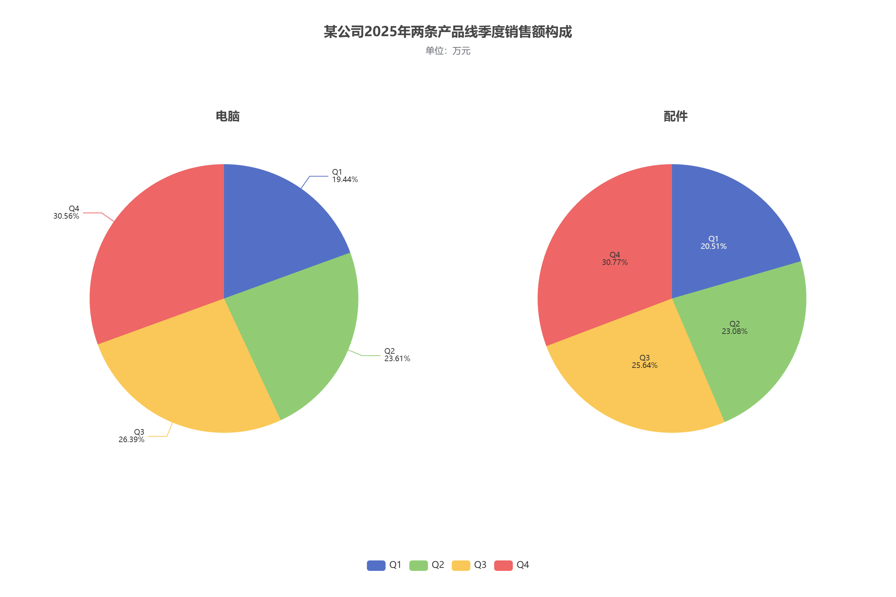

实验目的
通过 left 与 width 配置系列的绘制空间。
实验数据
| 季度 | 电脑 / 万元 | 配件 / 万元 |
|---|---|---|
| Q1 | 70 | 40 |
| Q2 | 85 | 45 |
| Q3 | 95 | 50 |
| Q4 | 110 | 60 |
实现要点
- 电脑与配件分别占左、右一半区域，各自的 center 均相对于本系列绘制区域。
- 电脑使用外部标签与 labelLine 对齐；配件使用内部标签。字号均为 10，分两行显示季度和百分比。
运行结果


完整配置
var option = {
title: [
{
text: '某公司2025年两条产品线季度销售额构成',
subtext: '单位：万元',
left: 'center',
top: 30
},
{
text: '电脑',
left: '25%',
top: '18%',
textAlign: 'center',
textStyle: { fontSize: 16 }
},
{
text: '配件',
left: '75%',
top: '18%',
textAlign: 'center',
textStyle: { fontSize: 16 }
}
],
tooltip: {
trigger: 'item',
formatter: '{a}<br/>{b}：{c} 万元（{d}%）'
},
legend: {
bottom: 30,
data: ['Q1', 'Q2', 'Q3', 'Q4']
},
series: [
{
name: '电脑销售额',
type: 'pie',
left: '0%',
top: 0,
width: '50%',
height: '100%',
radius: '60%',
center: ['50%', '50%'],
label: {
show: true,
position: 'outside',
alignTo: 'labelLine',
fontSize: 10,
formatter: '{b}\n{d}%'
},
labelLine: { show: true, length: 20, length2: 25 },
data: [
{ value: 70, name: 'Q1' },
{ value: 85, name: 'Q2' },
{ value: 95, name: 'Q3' },
{ value: 110, name: 'Q4' }
]
},
{
name: '配件销售额',
type: 'pie',
left: '50%',
top: 0,
width: '50%',
height: '100%',
radius: '60%',
center: ['50%', '50%'],
label: {
show: true,
position: 'inside',
fontSize: 10,
formatter: '{b}\n{d}%'
},
labelLine: { show: false },
data: [
{ value: 40, name: 'Q1' },
{ value: 45, name: 'Q2' },
{ value: 50, name: 'Q3' },
{ value: 60, name: 'Q4' }
]
}
]
};
myChart.setOption(option);